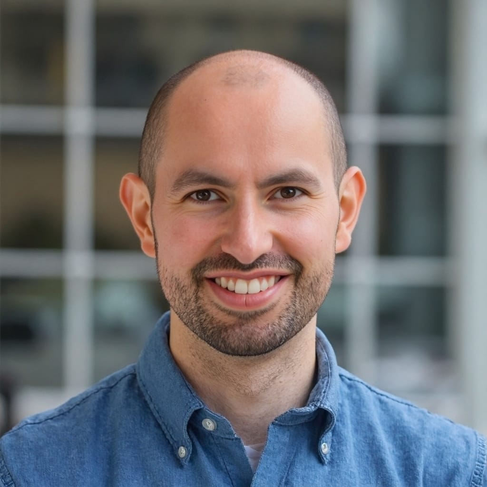

PhD · Geology, Petrology & AI/ML
KU Leuven, Belgium
Exploring how machine learning can help us study and classify igneous materials.
Geologist · Remote sensing · Petrology
I enjoy bringing together rocks, images and code to learn more about Earth and planetary surfaces. Here you can explore some of the questions I have been curious enough to investigate.
A little context
Hi, I’m Daniel. I’m a geologist with an MSc in Applied Remote Sensing for Earth Science from the University of Twente (ITC). I like connecting igneous petrology and geochemistry with different kinds of remote sensing data, including hyperspectral and radar observations.
I use Python, geovisualisation and emerging AI/ML methods to look at evidence from several angles. I’m especially interested in making that process clear, repeatable and useful to the people exploring it with me.

The long view
My path has taken me from field geology and laboratory work to remote sensing and computational methods. I am now continuing that journey through doctoral research at KU Leuven, where I am exploring the connection between petrology and AI/ML.
KU Leuven, Belgium
Exploring how machine learning can help us study and classify igneous materials.
University of Twente, ITC, Netherlands
Studying Earth observation, multimodal sensing, geoinformatics and planetary surfaces.
National University of Colombia
Building a foundation in field geology, igneous petrology, geochemistry and Earth science research.
How I stay curious
I like to approach a place or a rock from different angles. Combining field knowledge with images, spectra, radar and code can reveal a much more complete picture.
Petrology and geochemistry help me understand how igneous rocks formed and what their minerals can reveal.
I combine hyperspectral, radar and optical data to study composition, structure and change from different perspectives.
Python and AI/ML help me test ideas, repeat analyses and find patterns worth investigating further.
Maps and visual tools turn technical results into something researchers and wider audiences can inspect for themselves.
Research first, tools second
Explore published research and planetary studies first, followed by a compact selection of maps, applications and games.
Let’s connect
Have a project, a question or simply an idea you would like to talk through? Drop me a line. I’m always happy to meet curious people and hear what they are working on.
Send me a mail ↗